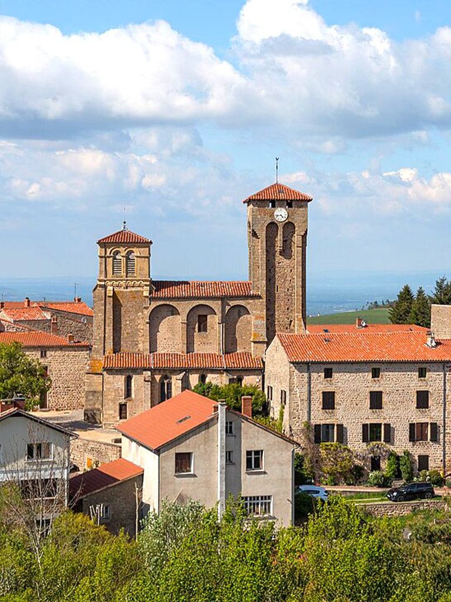
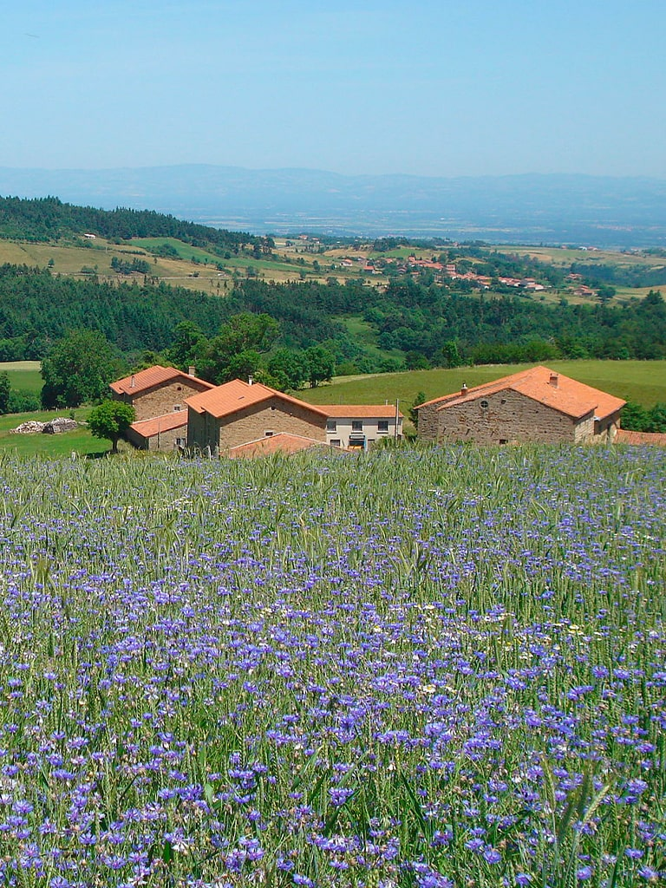

Pour prolonger votre séjour à Marols,
quatre chambres confortables sont disponibles à l’Auberge, ainsi que huit emplacements gratuits pour camping-cars, pour le plus grand bonheur des voyageurs du monde entier
.À proximité, Montbrison, cité historique mentionnée dès la fin du XIe siècle, est considérée comme la capitale historique du Forez.
Son patrimoine est notamment illustré par l’ancienne collégiale Notre-Dame d’Espérance, un joyau architectural incontournable.
Montbrison est également l’une des deux sous-préfectures du département de la Loire. En 2019, son marché a été élu plus beau marché de France, une visite à ne pas manquer.Non loin de Marols, la ville fortifiée de Saint-Bonnet-le-Château mérite également le détour. Classée « Village de Caractère », elle abrite une ancienne collégiale réputée pour ses fresques murales du XVe siècle.
Vous y trouverez aussi le Musée international de la pétanque, célébrant ce jeu traditionnel français.
